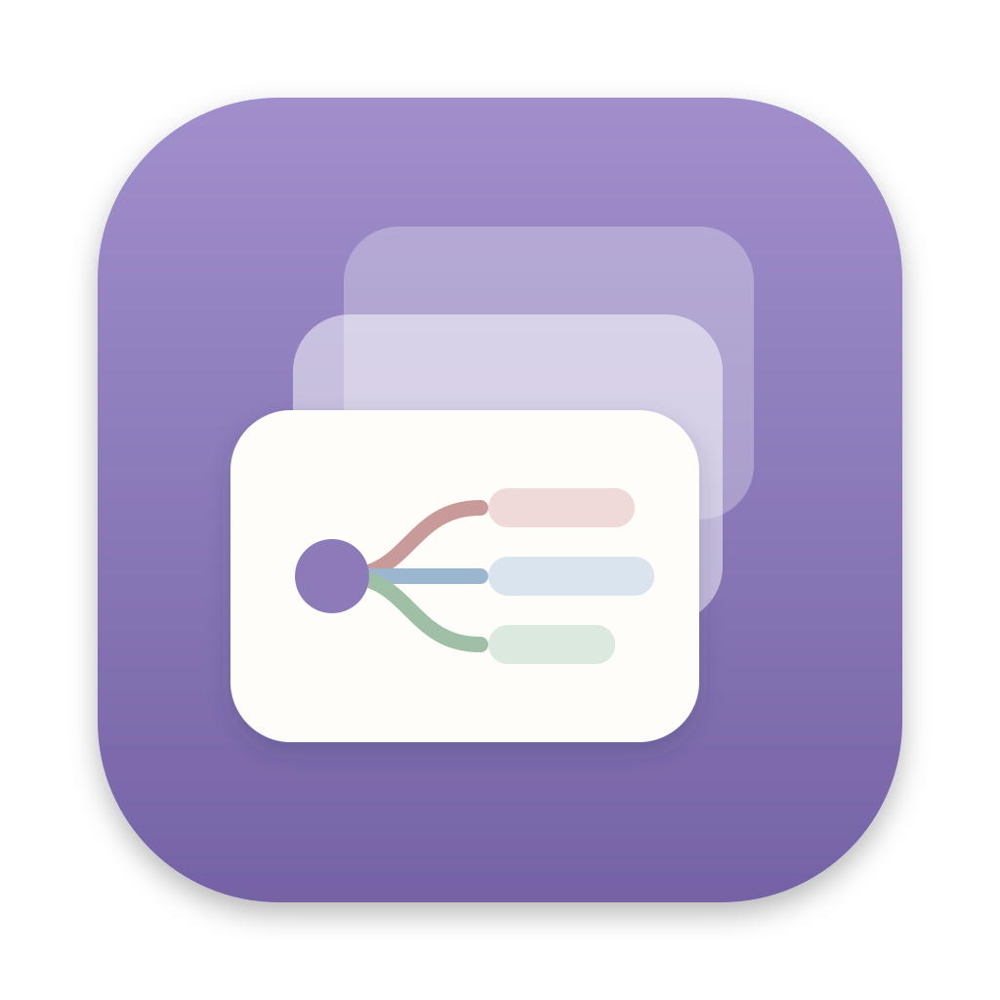

MindlayerBug reports, feature requests or questions: email forwardthomasmiller@icloud.com. I usually reply within 48 hours.
It's free, with no account or sign-in. Everything stays on your Mac.
Select a topic and press ⌘↓ (or right-click › Make sub-page). Its children move onto a new page. Press Esc to go back up.
Right-click a topic › Attach files…, or drag files onto a topic. PDF, Markdown, text and images are supported. Click "Read ›" to open the reader, then select text to clip it as a topic.
Click the ✦ button in the toolbar (or Settings ⌘, › AI connection), pick your tool and follow the three steps. Keep Mindlayer open while the AI works. The connection only runs on your Mac and needs your token.
Settings › Library › Show in Finder. Maps are plain JSON files. Mindlayer also makes a daily backup and keeps the last 7.
Settings › Language. Mindlayer is available in English, 简体中文, 繁體中文, 日本語, 한국어, Español, Deutsch and Français.
macOS 13 Ventura or later, on Apple silicon or Intel.
问题反馈、功能建议或任何疑问，请发邮件到 forwardthomasmiller@icloud.com，一般 48 小时内回复。
免费，不用注册也不用登录，数据都在你自己的 Mac 上。
选中主题按 ⌘↓（或右键 › 挂下一层），它的子主题就变成新的一页。按 Esc 回到上一层。
右键主题 › 挂文件…，或者直接把文件拖到主题上。支持 PDF、Markdown、文本和图片。点「阅读 ›」打开阅读器，选中文字就能摘录成主题。
点工具栏的 ✦ 按钮（或 设置 ⌘, › AI 连接），选你用的工具，按三步做就行。AI 工作时层思要开着。连接只在本机，需要你的令牌。
设置 › 资料库 › 在访达中显示。导图是普通的 JSON 文件。层思每天还会自动备份一次，保留最近 7 份。
设置 › 语言。支持简体中文、繁體中文、English、日本語、한국어、Español、Deutsch、Français。
macOS 13 Ventura 或更新版本，Apple 芯片和 Intel 芯片都可以。